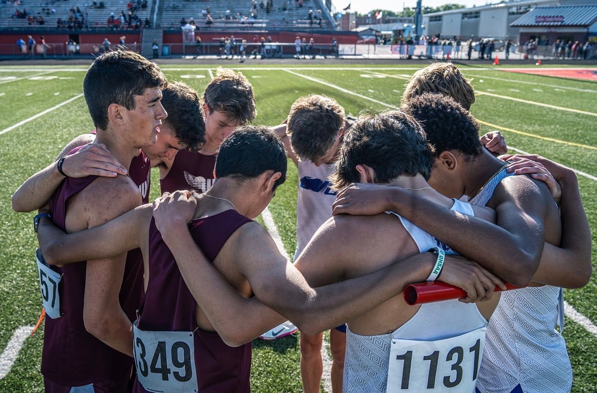
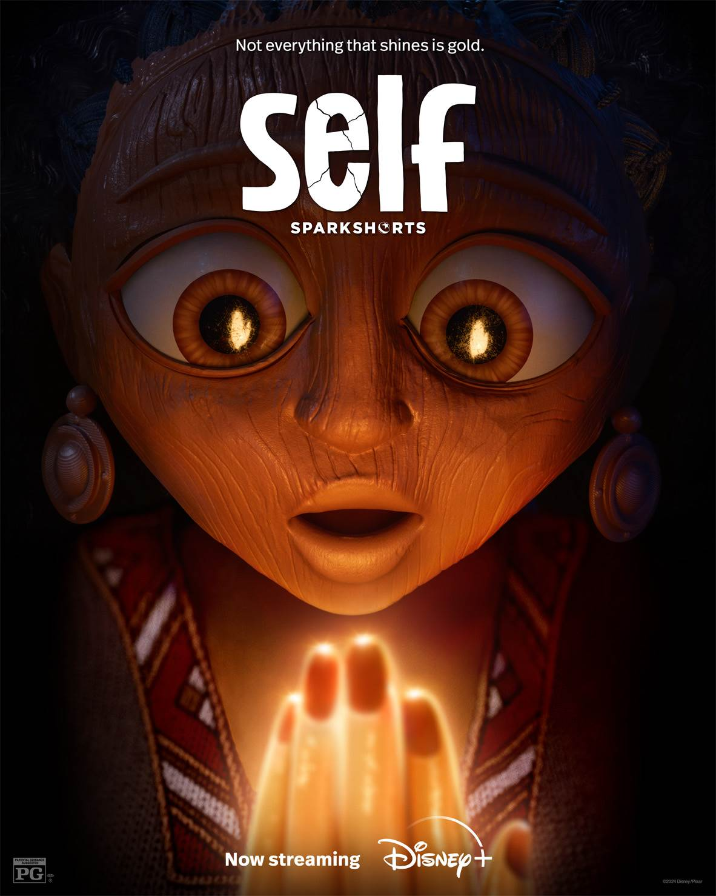
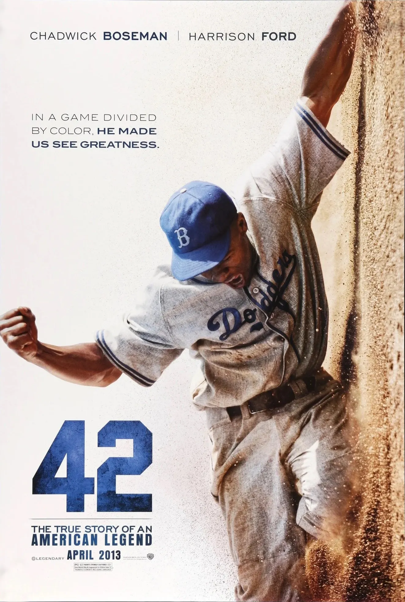

Athlete • Filmmaker • Creative Storyteller
800m
400m
ACT
1:54.82 PR
50.99 PR
15:56 PR
Junior at CVCA competing in middle-distance events with a focus on the 800m. Seeking opportunities to compete at the collegiate level while continuing to grow as a creator and storyteller.
"Progress isn't always visible, but it's always happening."
I'm a student-athlete at CVCA passionate about filmmaking, storytelling, business, and track & field.
1:54.06
50.99
15:56

Storytelling through cinematography, editing, and creative direction.

Highlight reels, race edits, and athlete stories.
Exploring visual storytelling through animation.
Compete in college track while building creative and business skills.